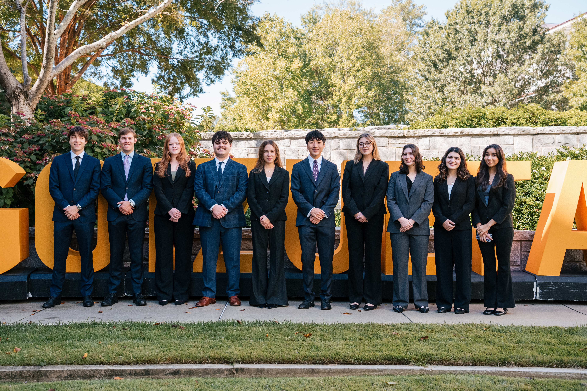

Join SBG
Membership is open to all Emory undergraduates on the Atlanta and Oxford campuses, in any major. We recruit new members each spring semester.
Start wherever fits you.
Many members start by coming to events or joining the Consultant Fellow Initiative, then move onto a client team. After a semester as a consultant, you can apply to be a Project Lead.

- General Member Come to our speaker series and general body meetings to learn about sustainable business and meet other members. How to join: no application needed. Come to any event.
- Consultant Fellow Learn the basics of consulting (research, frameworks and presenting) through training sessions and a mock client project. How to join: apply during spring recruiting. No consulting experience needed.
- Consultant Work on a team for a real client for the full semester, from the first research to the final presentation. How to join: apply during spring recruiting.
- Project Lead Run a client team: manage the client relationship, plan the work and guide the consultants. How to join: apply after completing a semester as a consultant.
From the board to our newest members
Select a level of the chart to see what that group does.
Board of Directors
Working professionals in consulting, finance, energy and sustainability, many of them SBG alumni. They advise the executive board and give project teams feedback on their work.
Meet the board →Executive Board
The students who run SBG, led by the two presidents. Each vice president owns one area: business development (finding clients), education (the Consultant Fellow program), marketing, external affairs, operations, technical development and board engagement.
Meet the executive board →Project Leads
Each Project Lead runs one client team for the semester. They are the client's main contact, set the work plan, and guide their consultants through to the final presentation.
Open to members who have completed a semester as a consultant.
Consultants
Consultants work in teams on semester-long, pro-bono projects for real clients, from Atlanta startups to Fortune 500 companies. They research the problem, build recommendations and present them to the client.
See our projects →Consultant Fellows
New members learn how consulting works through training sessions and a mock client project, before joining a real client team.
Open to any student. No consulting experience needed.
Ready to join?
SBG recruits new Consultant Fellows and consultants at the start of each spring semester. Applications are currently closed; follow @emorysbg on Instagram to hear when they open.
Questions? Email our presidents, Niels Cohen at niels.cohen@emory.edu and Tamryn Weiss at tamryn.weiss@emory.edu.